GameJam projects
由於不是遊戲專門科系，因此在課程中做遊戲專題的機會並不多。
以下的許多作品都是和對遊戲有興趣的朋友們一起報名GameJam所製作的，也因為GameJam的性質，只在兩三天內完成的專案並不完整，大多只是雛形。
但參與這些活動，一路以來也累積了不少經驗。每次團隊的組成都不同，所以程式、企劃、甚至是美術都擔任過，也體驗了和各種不同性格的夥伴發想遊戲、討論分工等情形。
主要負責程式的作品 —–
Mr.Pizza
以Pizza為主題發想的彈幕遊戲。
可以接取各種披薩上的餡料增強攻擊能力，包含遊戲剛開始時的醬料Bonus Time及遊戲中出現的各種蔬果食材。
並小心躲過各種想吃掉你的敵人，被餐具們和血盆大口攻擊到時，你會發現你被咬了一口！到只剩餅皮時就糟了！
在此次活動中擔任程式並負責敵人、以及最後的結算畫面的部分。
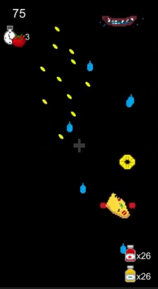 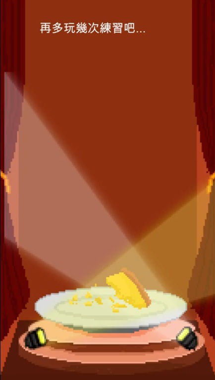
Video URL: https://www.youtube.com/watch?v=QNO7ZxlkeJc&list=LLk6AWI8As8JBMI4uD4bFDwQ&index=2&t=0s
クラッシュ
以經典敲鞋跟小遊戲為發想，並加入消除與升級的機智。控制鐵球的伸縮，挑戰最高的分數！
在此次負責鐵球及最後結算的部分。
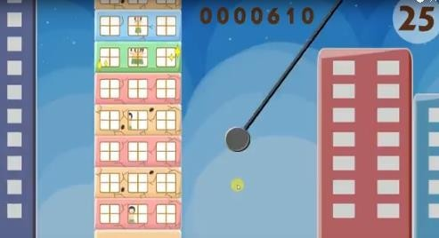
Video URL: https://www.youtube.com/watch?v=R5Q3euqoe80
兼職美術 —–
你Lay了嗎
好友們互相競爭的派對遊戲。玩家扮演各種小動物，搶奪從天上掉下來的彩蛋。妨礙對方之餘也要小心接到陷阱的蛋！
在此專案中負責彩蛋的部分，包含美術的繪製及生成的程式。
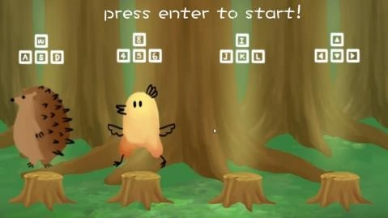 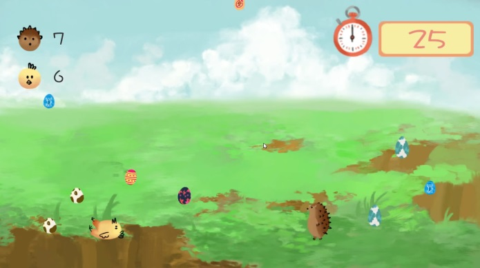
Video URL: https://www.youtube.com/watch?v=Vfo_v2Li5Ns
ㄎㄧㄤ
玩家要試圖散播自己的理念，使大家都解放自我。
四個程式一個美術的團隊組合，於是便被分配去支援2D美術。
繪製了各種正常及解放後的角色、道具，及協助設定角色動畫。
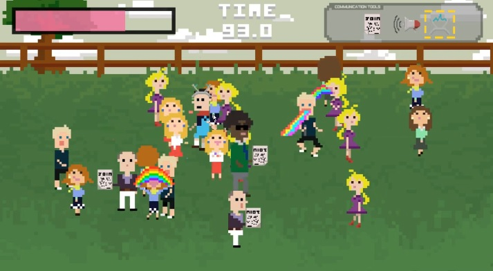
Video URL: https://www.youtube.com/watch?v=zV_ryAVMdtg&feature=youtu.be
歌仔戲
題目為台灣特色，我們以布袋戲為主題設計了一款動作反應小品。
玩家飾演主角戲偶，演出掌中劇，擊退敵人。消滅越多敵人，台下的觀眾越多！
在此團隊中擔任美術，協助繪製台下觀眾，並設置動畫。
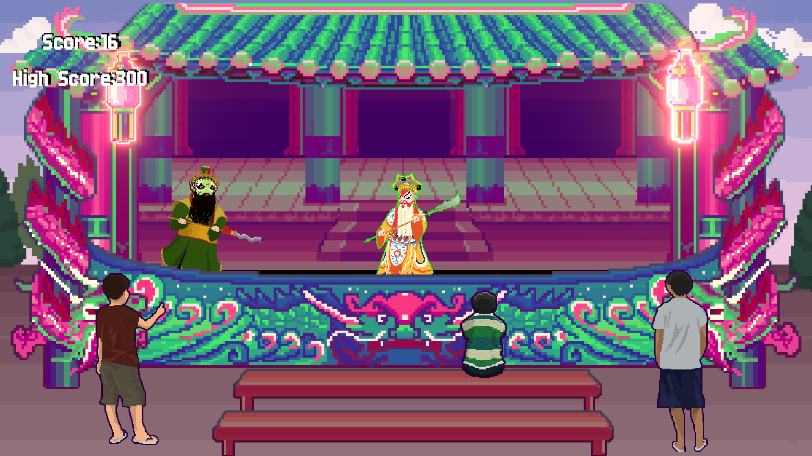 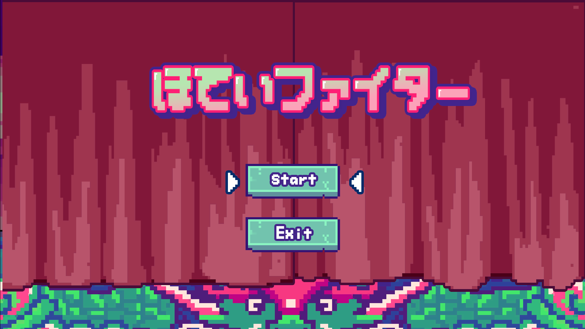
Video URL: https://www.facebook.com/gameintership/videos/999596486860497/
鬼抓人
連線對戰的派對遊戲，玩家要躲避鬼的射擊，被擊中即變成新的鬼。
在此次專案中負責3D美術，製作了場景中的植物、建築物的建模。
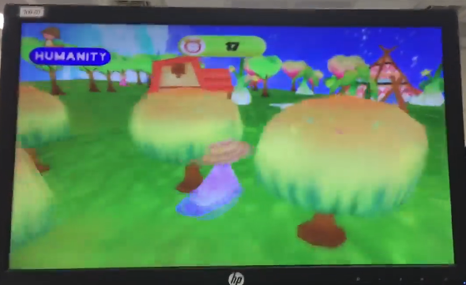
Video URL: https://www.facebook.com/gameintership/videos/997091820444297/
其他
有些專案由於團隊組成分工，沒有參與到主要功能製作；或是企畫時程掌握不佳，部分功能未能即時整合進系統等關係，最終呈現的作品較沒有我負責的區塊。大部分參與在企劃討論、協助組員等。
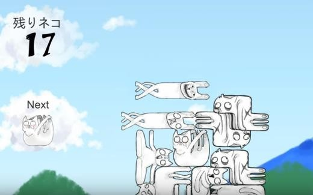
Video URL: https://www.youtube.com/watch?v=fHaPG9phTqY
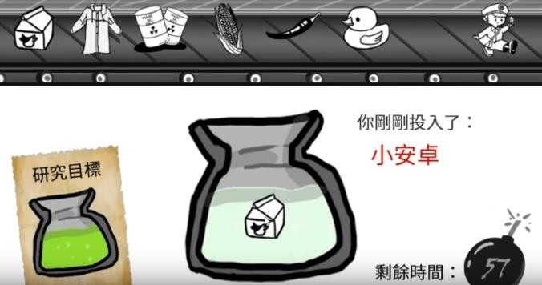
Video URL: https://www.youtube.com/watch?v=G5pDIlAq8b8
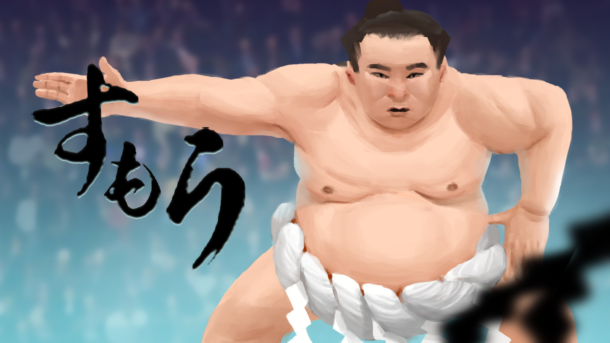